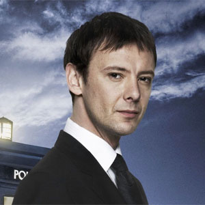

| Home, The Doctors, Companions, Villains | |||||||
 |
|||||||
|
The VillainsThe MasterThe Master is a recurring character in the British television science fiction series Doctor Who. He is a renegadeTime Lord and the archenemy of the Doctor. The Master was played by Roger Delgado from the character's first appearance in 1971 to the actor's death in 1973.[1] Peter Pratt and Geoffrey Beevers played a physically decayed version of the Time Lord, then Anthony Ainley assumed the part from 1981 until the show's cancellation in 1989. In the 1996 TV movie, the character was played briefly by Gordon Tipple and then by Eric Roberts. For the revived series, Derek Jacobi provided the character's re-introduction before handing over the role to John Simm.[2] The creative team conceived the Master as a recurring villain, a "Professor Moriarty to the Doctor's Sherlock Holmes."[3] He first appeared in Terror of the Autons(1971). The Master's title was deliberately chosen by producer Barry Letts and script editor Terrance Dicks as evocative of supervillain names in fiction, but primarily because, like the Doctor, it was a title conferred by an academic degree. |
||||||